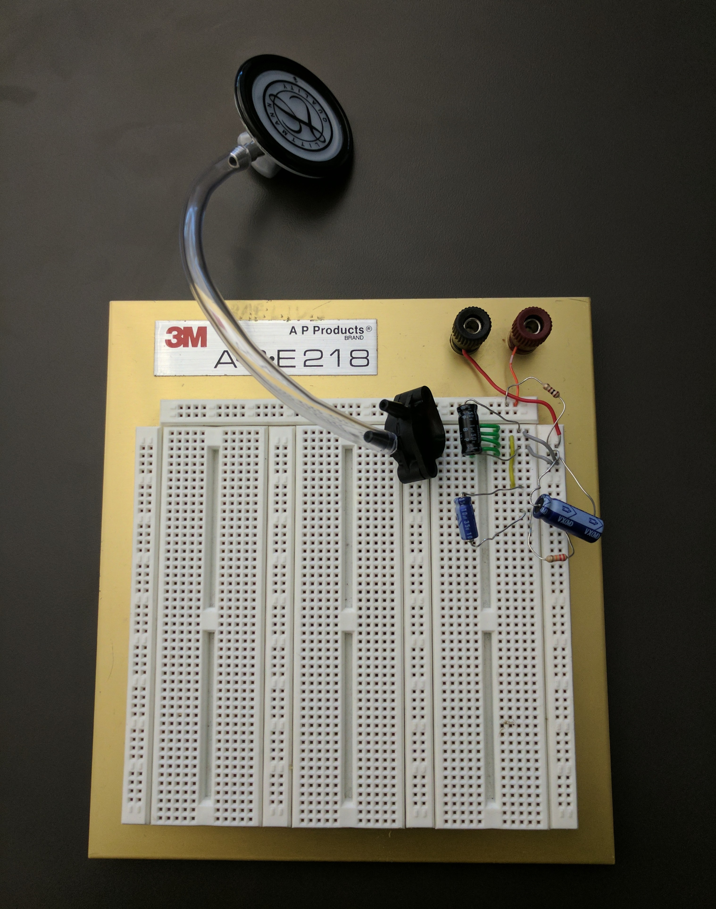
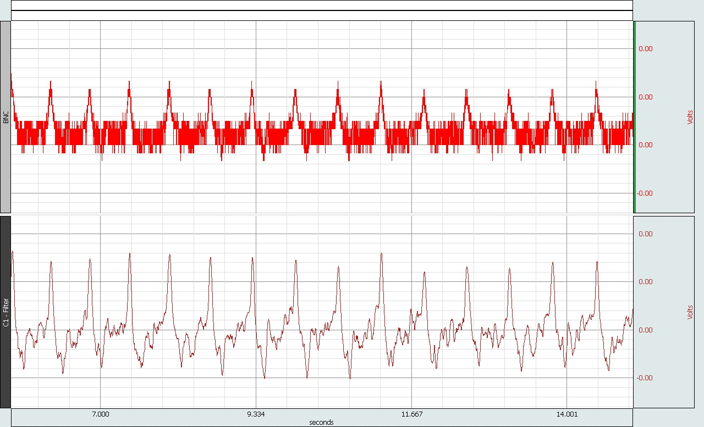

Infrascope is a prototype development of a stethoscope which aims to selectively detect frequencies below the threshold of human hearing and shift them into the normal listening range. The device works by collecting pulse data from a pressure transducer connected to a normal stethoscope bell, filtering out unwanted signal through a series of high, low, and bandpass filters, and sending the signal to an amplifier to boost our desired signal. From here the amplified signal is sent to a Voltage Controlled Oscillator which outputs a steady 500Hz signal which oscillates in accordance with the input from the stethoscope end.
The goal of this project is to create a device which is small, cost effective, and user friendly so that it may be used by physicians to detect early onset carotid artery disease, which has been shown to emit vibrations in the 30hz range, virtually undetectable with current equipment.

